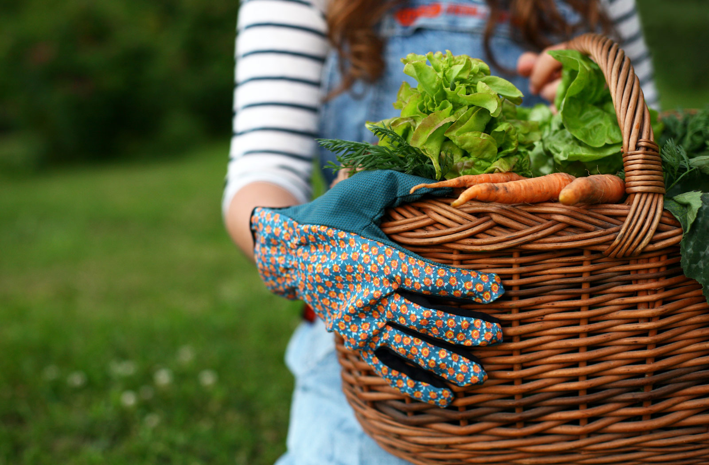

Здравословен живот
"Здравето не е всичко, но без здраве всичко е нищо." Шопенхауер
Реалност ли е здравословният начин на живот?
Всекидневно здравето ни е застрашено от хиляди вредни въздействия и много от нас си казват: „Защо да променям режима си на хранене като досега съм погълнал с тонове нездравословни храни? Защо да го правя тепърва? Как да водя здравословен начин на живот като въздуха, който дишам е пълен с отрови и от това не мога да се скрия.” Да, има неблагоприятни влияния, които не можем да премахнем поне в близко бъдеще, но защо не започнем поне с дребните стъпки, които да подобрят нашия микросвят и качеството на живота на тези, които обичаме и разбира се на нас самите. Например хиляди хора си изхвърлят хартийките на земята. Ние никога няма да започнем да го правим, въпреки че не можем да ги спрем и те винаги ще го правят. Ние просто не искаме да сме като тях и ще продължим да даваме нашия малък принос за създаването на по-здравословен свят, в който да живеем.
Здравословният начин на живот е реално постижимо понятие, въпреки многото аспекти, които обхваща. Като цяло живеещият здравословно човек не пуши, поддържа здравословно тегло, храни се с полезни храни и спортува. Воденето на здравословен живот не може да стане за един ден, но може всекидневно да правите малки и ползотворни крачки към целта – да повървите малко повече, да добавите плод към зърнената си закуска или още една чаша вода към дневната си доза. Елементарни неща, за които не се изисква никакво усилие от ваша страна. Отделете няколко секунди, за да си сипете чаша хубава вода и я изпийте, докато четете това. Ако направите това навик, вече сте с една крачка напред.
Шест стъпки,които ще подобрят живота ви
Не е нужно да е трудно, да изисква много пари или време , за да повишите качеството си на живот.Това е само началото тук са чест прости стъпки,които ще ви помогнат.
- Пийте повече вода.
- Заменете нездравословните със здравословни съставки.
- Движете се повече.
- Наспивайте се пълноценно.
- Освобождавайте се от стреса.
- Живейте естествено, близо до природата.